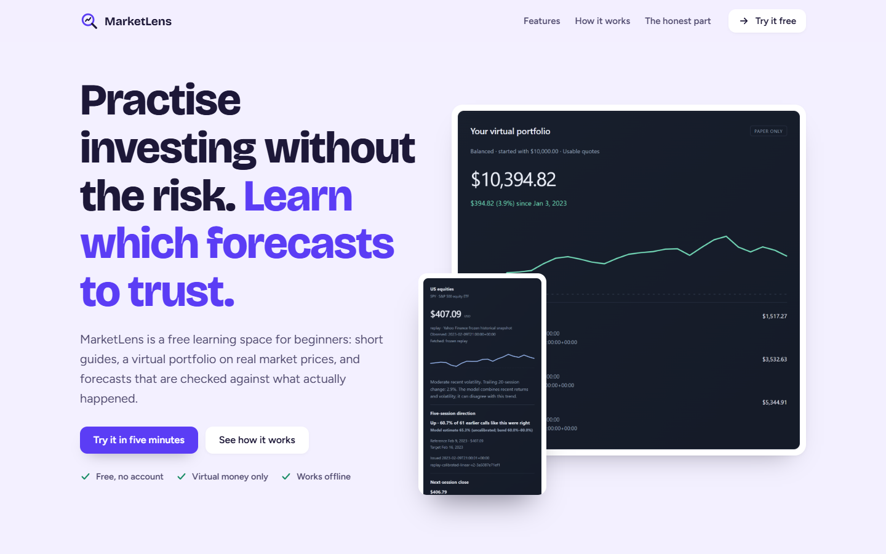

D · Lila-fehér termékoldal
A te referenciád stílusa: világos lila háttér, fehér kártyák, barátságos betűk.
- Erőssége
- Barátságos, rendezett, a funkciók egymás után, mindegyik mellett egy valódi képernyőkép.
- Kockázat
- A legmegszokottabb a három közül.